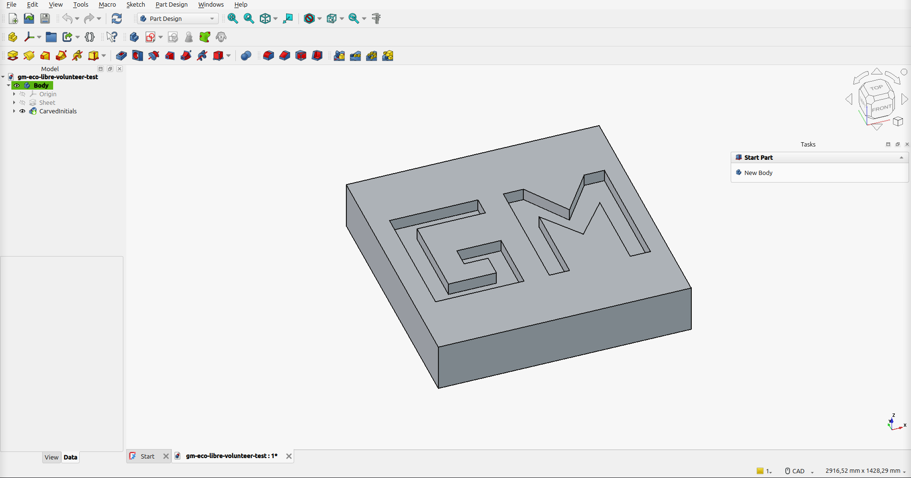

Greyson Miller’s Eco-Libre Volunteer Test
Contenidos:
This documentation is the final deliverable of the Eco-Libre Volunteer Test, performed by Greyson Miller.

Screenshot of the FreeCAD object: a 1 m x 1 m x 20 cm sheet of steel with my initials «GM» carved 5 cm deep
The purpose of this test is to demonstrate experience with the tools needed to be successful as a volunteer with Eco-Libre: GNU/Linux, git, FreeCAD, recordmydesktop, kdenlive, PeerTube, and Sphinx. It also demonstrates familiarity with open-source licensing, specifically the Creative Commons Attribution-ShareAlike 4.0 International license, under which all of Eco-Libre’s works are licensed.
Video
The video below shows the sheet of metal being created and the initials being carved in FreeCAD. It was recorded with recordmydesktop, sped up to 30 seconds in kdenlive, given a CC BY-SA background soundtrack, rendered in kdenlive, and uploaded to PeerTube under CC BY-SA.
Watch it on PeerTube: https://peertube.watch/w/a8wNhiH1Hc4WimVL8e41Ck
What I did in FreeCAD
The model was built in FreeCAD 1.1 (Flatpak) on Linux Mint 22.2, using the PartDesign workbench for the solid features and the Sketcher workbench for the sketches.
Created a new document and a PartDesign
Body.Sheet outline. Created a sketch on the
XY_Planeand, in the Sketcher workbench, drew a square. I constrained it to be fully defined: horizontal/vertical edges, 1000 mm sides, and symmetric about the origin.Sheet of metal. Closed the sketch and used Pad with a length of 200 mm, giving a 1 m x 1 m x 20 cm plate. I set the Body’s material to Steel so it really is a sheet of metal.
Initials. Created a second sketch on the
XY_Plane, offset 200 mm in Z (AttachmentOffset) so it sits on the top face of the plate. In the Sketcher workbench I drew the outlines of block letters G and M (500 mm tall, 80 mm strokes) as closed polylines with coincident constraints at every corner.Carving. Closed the sketch and used Pocket with a length of 50 mm, carving the initials 5 cm deep into the metal.
Checking the result. The final solid is valid, its bounding box is 1000 x 1000 x 200 mm, and the volume removed is 11,140,000 mm3. That is exactly the area of the two letters (104,400 + 118,400 mm2) times the 50 mm depth.
The model in the video was built by running the FreeCAD macro build_gm_sheet.FCMacro in the FreeCAD GUI. It performs all of the steps above, and you can use it to reproduce the model. See FreeCAD Macro for the full source and how to run it.
What I did in kdenlive
Opened a kdenlive 26.08 project (1080p, 30 fps) with the
recordmydesktopcapture and the soundtrack in the Project Bin.Put the 2 min 22 s recording on the video track, then used Change Speed on the clip and typed a duration of
00:00:30:00. kdenlive calculated the speed as 473.56%.In the Clip Monitor, set the soundtrack’s out point at
00:00:29:29and used Overwrite to put those first 30 seconds on the audio track under the video.Dragged the audio clip’s fade handle to add a ~3 second fade-out at the end.
Rendered with the MP4-H264/AAC preset (Render -> Render to File), giving a 30 second, 1920 x 1080 video.
Files
All source files are in the docs/ directory of this repo:
gm-eco-libre-volunteer-test.FCStd: the FreeCAD model
build_gm_sheet.FCMacro: the FreeCAD macro that builds the model (source and instructions)
gm-recordmydesktop.ogv: the source screen recording from
recordmydesktopgm-eco-libre-volunteer-test.kdenlive: the kdenlive project
John_Harrison_-_Vivaldi_Spring_Mvt_1_Allegro.mp3: the background soundtrack
gm-eco-libre-volunteer-test.mp4: the final 30 second video rendered by kdenlive
Music Attribution
The background soundtrack is «Spring, Mvt. 1: Allegro» from Antonio Vivaldi’s The Four Seasons, performed by John Harrison with the Wichita State University Chamber Players, via the Free Music Archive (archive.org mirror). The recording is licensed under CC BY-SA 3.0, which is compatible with the CC BY-SA 4.0 license of the video. The composition itself is in the public domain.
Tips for Future Volunteers
This section documents what I learned while completing the Eco-Libre Volunteer Test, to help the next person.
Linux
I used Linux Mint 22.2 (Cinnamon), which is based on Ubuntu 24.04. Like Michael Altfield found with Linux Mint, freecad is not available in its apt repos. Instead of switching distros, I installed FreeCAD and kdenlive from Flathub, which also gives much newer versions than apt (FreeCAD 1.1 and kdenlive 26.08 instead of kdenlive 23.08):
flatpak install --user flathub org.freecad.FreeCAD org.kde.kdenlive
sudo apt install recordmydesktop python3-sphinx python3-sphinx-rtd-theme python3-git inkscape gimp
Flatpak apps can’t see files in /tmp, so keep your work somewhere in your home directory.
FreeCAD
Draw letters as closed outlines, not single strokes. Pocket needs closed wires that don’t cross themselves. Block letters made from straight segments are the easiest.
Put the initials sketch on the top face of the plate (or on the XY plane offset by the plate thickness). A Pocket cuts in the direction opposite the sketch normal, down into the metal.
In FreeCAD 1.x the sketch attachment property is called
AttachmentSupport(it wasSupportin 0.x), which matters if you follow older tutorials or Python examples.
Music
Only CC0, CC BY, and CC BY-SA music can be used in a CC BY-SA video. NC (NonCommercial) and ND (NoDerivatives) licenses are not compatible.
Check the license in more than one place. The track I first picked was listed as CC BY-SA on both its Free Music Archive page and archive.org, but the copyright tag inside the MP3 said Attribution-Noncommercial-Share Alike. I switched to a track where the album page, archive.org, and the MP3 tag all agree. You can read the tag with:
ffprobe -v error -show_entries format_tags=copyright -of default=nw=1 song.mp3
kdenlive
Change Speed (right-click the clip in the timeline) lets you type the duration you want, and kdenlive calculates the speed. That’s easier than guessing a percentage.
The Overwrite (
B) and Insert (V) shortcuts edit every active track. Turn off the video track’s target (click itsV1label so it goes grey) before overwriting an audio-only clip. Otherwise kdenlive blanks the video track under it.Homejumps to the start of the clip.Ctrl+Homejumps to the start of the project.
Sphinx and GitHub Pages
I forked Michael Altfield’s volunteer test repo, which already has a working Sphinx + Read the Docs theme + GitHub Actions setup (see this article). After forking:
Settings -> Actions -> General -> Workflow permissions: choose «Read and write permissions», so the CI can push the
gh-pagesbranch.Actions tab: GitHub disables workflows on forks. Click «I understand my workflows, go ahead and enable them».
Settings -> Pages: deploy from the
gh-pagesbranch,/ (root).In
docs/conf.py, changegithub_userto your username andgithub_versiontomain/docs/so the «Edit on GitHub» link works.
You can also build the site locally before pushing: make -C docs html and then open docs/_build/html/index.html.
Two more things I ran into:
On my fork, pushes didn’t start the workflow, but running it manually did. I added
workflow_dispatchto.github/workflows/docs_pages_workflow.yml, so you can start a build from the Actions tab with Run workflow (orgh workflow run docs_pages_workflow.yml).The pdf download link 404’d, in the template too. Debian bookworm’s
piprefuses to install packages system-wide (PEP 668), sorinohtypewas never installed. Simply adding--break-system-packagesmade pip upgrade Sphinx as well, which broke the HTML build. The fix indocs/buildDocs.shinstallsrinohtypeconstrained to the versions apt already installed.
PeerTube
Most PeerTube instances require an admin to approve new accounts. The JoinPeerTube instance list lets you filter for instances with open registration. The video embed above uses the «Embed» code from PeerTube’s Share dialog, passed through a raw directive.
License
This site and the media in this repo are licensed CC BY-SA 4.0 (code is GPLv3). It is based on Michael Altfield’s Eco-Libre Volunteer Test, also CC BY-SA.